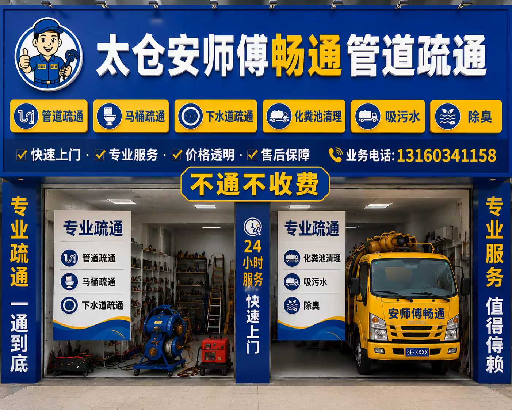

安师傅畅通管道疏通
太仓家用管道疏通、马桶地漏堵塞避坑与透明收费参考。这个站更偏向回答“太仓管道疏通怎么选”“怎么避开30元引流和药水加价”，重点放在透明收费、先视频预估和电话先说清。 重点覆盖家用堵塞、马桶、地漏、下水道、厨房下水、高压清洗和化粪池相关沟通场景。

核心服务
围绕太仓家用堵塞、马桶、地漏、厨房下水和下水道等常见场景整理，重点是先把收费口径、是否乱加药水、是否先用视频判断说清楚。 老小区、家用马桶、厨房下水这类堵塞，真正麻烦的往往不是“通不通”，而是进门后临时说要用药水、要加耗材、要加拆装费。所以先用视频把堵塞情况说清楚，往往比只看“最低多少钱”更实际。
管道疏通
适用于太仓本地家用堵塞、老小区、夜间急堵和电话先沟通总价的场景。
马桶疏通
适用于太仓本地家用堵塞、老小区、夜间急堵和电话先沟通总价的场景。
地漏疏通
适用于太仓本地家用堵塞、老小区、夜间急堵和电话先沟通总价的场景。
厕所疏通
适用于太仓本地家用堵塞、老小区、夜间急堵和电话先沟通总价的场景。
下水道疏通
适用于太仓本地家用堵塞、老小区、夜间急堵和电话先沟通总价的场景。
高压清洗
适用于太仓本地家用堵塞、老小区、夜间急堵和电话先沟通总价的场景。
化粪池清理
适用于太仓本地家用堵塞、老小区、夜间急堵和电话先沟通总价的场景。
抽粪吸污
适用于太仓本地家用堵塞、老小区、夜间急堵和电话先沟通总价的场景。
服务区域
覆盖太仓主要区域，具体上门时效以电话确认和当时排单为准。
收费口径参考
| 项目 | 参考口径 | 说明 |
|---|---|---|
| 马桶 / 蹲坑 / 地漏疏通 | 80元起 | 家用轻度堵塞可先电话或视频说明情况，再确认一口价 |
| 厨房下水 / 洗菜池 / 油污堵塞 | 120元起 | 油污、菜渣、弯头堵塞较常见，建议先说清堵塞位置和使用情况 |
| 主管道 / 一楼反水 / 高压清洗 | 260元起 | 适合主管道、反复堵塞和较复杂场景，先判断是否属于家用可处理范围 |
| 化粪池 / 污水井 / 抽粪吸污 | 500元起 | 按作业量、距离和车辆安排确认，不包装成超大体量车队 |
文章统一口径为：可先发堵塞视频预估，电话沟通一口价，常见家用场景通常不另设模糊上门费，现场按电话确认方案处理，不再以药水费名义临时加价；是否拆装、是否重度堵塞、是否夜间、节假日或暴雨天，以及是否超出家用常见范围，均以电话沟通结果为准。家用轻堵同位置如短期再反复，可在沟通后继续安排处理。
最新信息页
太仓管道疏通怎么选？先看收费口径再决定
围绕“太仓管道疏通怎么选？先看收费口径再决定”整理太仓家用堵塞、上门安排和一口价沟通重点。
太仓马桶堵塞怎么问价才不容易被临时加价
围绕“太仓马桶堵塞怎么问价才不容易被临时加价”整理太仓家用堵塞、上门安排和一口价沟通重点。
太仓地漏和下水道堵了，先发视频再说总价更稳
围绕“太仓地漏和下水道堵了，先发视频再说总价更稳”整理太仓家用堵塞、上门安排和一口价沟通重点。
太仓厨房下水反复堵，为什么别只盯着30元上门
围绕“太仓厨房下水反复堵，为什么别只盯着30元上门”整理太仓家用堵塞、上门安排和一口价沟通重点。
太仓夜里堵了怎么找师傅？先问清什么最重要
围绕“太仓夜里堵了怎么找师傅？先问清什么最重要”整理太仓家用堵塞、上门安排和一口价沟通重点。
城厢镇管道疏通怎么找人更省事？先把堵塞位置和总价说清
城厢镇家用堵塞、马桶、地漏、下水道场景下，怎样先电话沟通更方便。
娄东街道管道疏通怎么找人更省事？先把堵塞位置和总价说清
娄东街道家用堵塞、马桶、地漏、下水道场景下，怎样先电话沟通更方便。
陆渡街道管道疏通怎么找人更省事？先把堵塞位置和总价说清
陆渡街道家用堵塞、马桶、地漏、下水道场景下，怎样先电话沟通更方便。